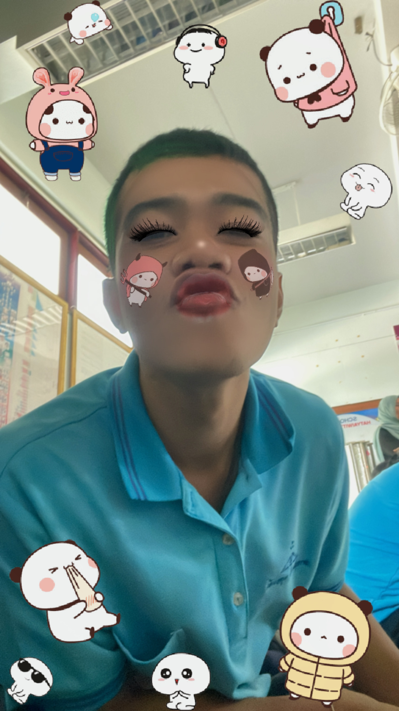
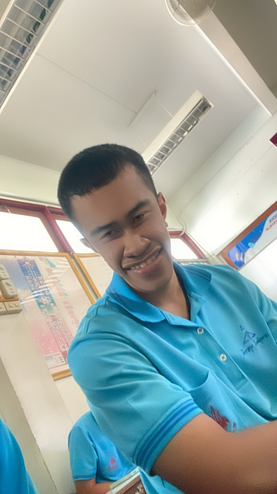
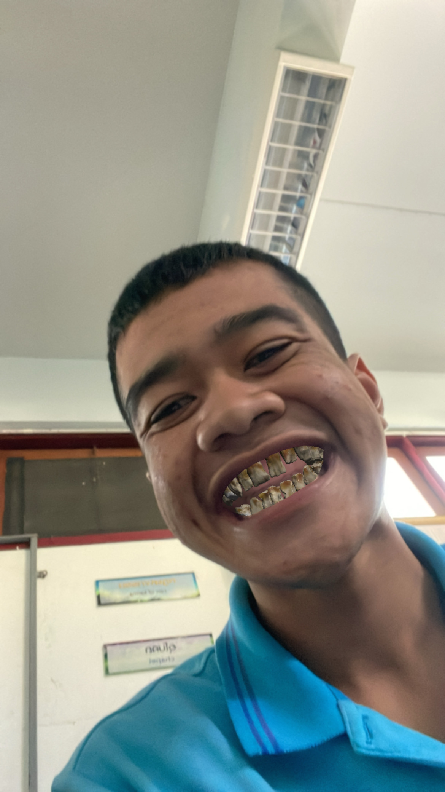
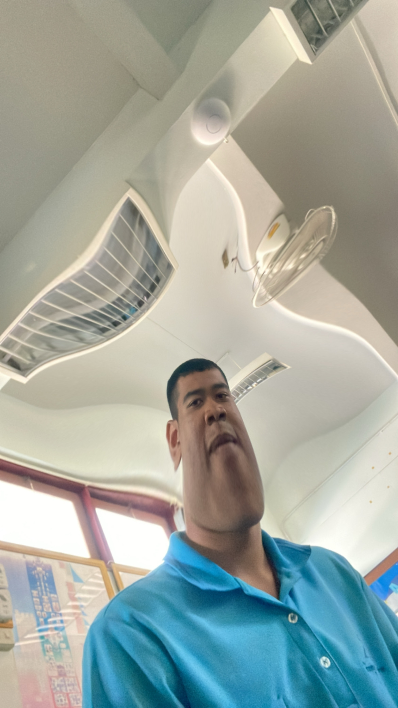

Khet Blog: A day in the life of Khet
Project information
- Category: Blog
- Publish date: 12 November, 2024
ชีวิตของน้องเขตในคณะวิศวกรรมคอมพิวเตอร์เต็มไปด้วยความหลากหลาย ทั้งการเรียน การทดลอง การทำโปรเจ็กต์ และการเข้าสังคม มันอาจดูยุ่งวุ่นวาย แต่ทุกช่วงเวลาคือก้าวสำคัญสู่เป้าหมายของเขาในการเป็นวิศวกรคอมพิวเตอร์ในอนาคต
หนึ่งวันในชีวิตของ “น้องเขต” ในคณะวิศวกรรมคอมพิวเตอร์
ช่วงเช้า
วันใหม่เริ่มต้นขึ้นเมื่อแสงแดดยามเช้าส่องผ่านหน้าต่างหอพัก น้องเขตตื่นขึ้นมาในห้องเล็กๆ ที่จัดไว้อย่างเรียบร้อย หลังจากล้างหน้าแปรงฟันและจัดเตรียมตัวสำหรับวันใหม่ เขตก็ทานอาหารเช้าง่ายๆ ที่ทำเองหรือซื้อไว้จากร้านสะดวกซื้อใกล้ๆ ไม่ว่าจะเป็นแซนด์วิช ขนมปังปิ้ง หรือโจ๊กอุ่นๆ อาหารเช้าคือแหล่งพลังงานสำคัญสำหรับวันที่ต้องใช้สมองหนัก เขาเช็คตารางเรียนของวันผ่านแอปบนมือถือ เพื่อให้แน่ใจว่าไม่มีอุปกรณ์หรือเอกสารใดๆ ตกหล่น จากนั้นเขตเดินหรือปั่นจักรยานออกจากหอพัก มุ่งหน้าสู่คณะวิศวกรรมศาสตร์ มหาวิทยาลัยแห่งความฝันที่เต็มไปด้วยโอกาสและความท้าทาย เมื่อถึงอาคารเรียน เขาตรงไปยังห้องเรียนของคาบแรกซึ่งวันนี้เป็นวิชาที่เน้นการเขียนโปรแกรม เนื้อหาในคาบเกี่ยวกับการพัฒนาซอฟต์แวร์และการวิเคราะห์โครงสร้างข้อมูล อาจารย์มักให้นักศึกษาได้ลองแก้โจทย์ปัญหาแบบลงมือปฏิบัติจริง เขตตั้งใจจดบันทึกและถามคำถามเมื่อมีข้อสงสัย

ช่วงสาย
หลังจากจบคาบเรียนช่วงเช้า เขตเดินไปยังห้องแล็บวิศวกรรมคอมพิวเตอร์เพื่อทำงานโปรเจ็กต์ที่กำลังอยู่ในระหว่างการพัฒนา ห้องแล็บนี้เป็นเหมือนสนามเด็กเล่นสำหรับนักศึกษาที่รักการสร้างสรรค์ เขตทดลองใช้ซอฟต์แวร์และอุปกรณ์ต่างๆ เช่น บอร์ดไมโครคอนโทรลเลอร์หรือเซ็นเซอร์ เพื่อพัฒนาโปรแกรมควบคุมฮาร์ดแวร์และระบบอัจฉริยะ เขาตรวจสอบโค้ด แก้บั๊ก และบันทึกผลลัพธ์ของการทดลองไว้ในเอกสารรายงาน บางครั้งเพื่อนร่วมกลุ่มโปรเจ็กต์ก็เข้ามาช่วยเหลือ ทุกคนแบ่งหน้าที่กันอย่างชัดเจน เขตชอบช่วงเวลานี้ เพราะได้เรียนรู้จากเพื่อนๆ และแลกเปลี่ยนไอเดียใหม่ๆ ที่สามารถนำไปต่อยอดในอนาคต
เที่ยง
เมื่อเสียงท้องร้องเริ่มดัง เขตและเพื่อนๆ เดินไปที่โรงอาหารคณะเพื่อพักทานข้าวมื้อกลางวัน เมนูโปรดของเขตคือข้าวกะเพราไข่ดาว เผ็ดร้อนและอร่อยเรียบง่าย ระหว่างมื้ออาหาร บรรยากาศเต็มไปด้วยเสียงหัวเราะและบทสนทนา ทั้งเรื่องเรียนและเรื่องส่วนตัว เพื่อนๆ มักพูดคุยเกี่ยวกับโปรเจ็กต์ที่แต่ละคนกำลังทำ บางครั้งก็แชร์ปัญหาหรือแนะนำวิธีแก้ไข
ช่วงบ่าย
หลังมื้อเที่ยง เขตกลับไปยังห้องเรียนอีกครั้ง ซึ่งวันนี้มีคาบเรียนวิชาการพัฒนาโปรแกรมแบบกลุ่ม ในวิชานี้เขตได้ฝึกการแก้ปัญหาเชิงระบบ โดยนำความรู้ด้านคณิตศาสตร์และอัลกอริทึมมาประยุกต์ใช้ อาจารย์มอบหมายโจทย์ปัญหาที่ท้าทาย เช่น การออกแบบระบบจัดการข้อมูลขนาดใหญ่หรือสร้างแอปพลิเคชันต้นแบบ เขาและทีมต้องทำงานร่วมกัน แบ่งหน้าที่ชัดเจน เขตชอบการทำงานกลุ่มเพราะได้ฝึกทักษะการสื่อสารและการจัดการเวลา บางวันหากไม่มีคาบเรียนบ่าย เขตอาจใช้เวลานี้ในการเข้าห้องสมุดเพื่ออ่านหนังสือหรือค้นคว้าเพิ่มเติมเกี่ยวกับโปรเจ็กต์ เขาเชื่อว่าการเรียนรู้นอกชั้นเรียนสำคัญไม่แพ้การเรียนในห้อง
ช่วงเย็น
เมื่อถึงเวลาเลิกเรียน เขตมักโทรหาพ่อแม่เพื่อพูดคุยเรื่องราวของวัน เป็นการสร้างความอบอุ่นและสายสัมพันธ์กับครอบครัว หลังจากนั้นเขตกลับไปที่หอพักเพื่อพักผ่อน ทานอาหารเย็น หรือบางครั้งหากคิดถึงอาหารฝีมือแม่ก็จะกลับบ้านเพื่อร่วมโต๊ะอาหารกับครอบครัว
ช่วงค่ำ
หลังจากมื้อค่ำ เขตใช้เวลาบางส่วนกับเพื่อนๆ หรือนั่งหน้าคอมพิวเตอร์เพื่อเขียนโค้ดและพัฒนาทักษะส่วนตัว เขาชอบทดลองสิ่งใหม่ๆ เช่น การเขียนเกมเล็กๆ หรือการสร้างเว็บไซต์ อย่างไรก็ตาม หากวันไหนมีงานกลุ่มที่ต้องเร่งส่ง เขตก็จะออกไปพบเพื่อนที่ร้านกาแฟใกล้หอเพื่อทำงานร่วมกัน เมื่อเสร็จงาน เขตอาจเลือกผ่อนคลายด้วยการออกไปเที่ยวกลางคืนกับเพื่อนๆ ร้านนั่งชิลหรือร้านเหล้าเป็นจุดหมายปลายทางยอดนิยม ไม่ได้ไปเพียงเพื่อดื่ม แต่เพื่อพูดคุยและทำความรู้จักเพื่อนใหม่ๆ บรรยากาศเหล่านี้ช่วยให้เขารู้สึกผ่อนคลายและเติมพลังสำหรับวันต่อไป ก่อนเข้านอน เขตมักวางแผนสิ่งที่จะทำในวันถัดไป เขาเชื่อว่าการจัดระเบียบชีวิตเป็นหัวใจสำคัญในการประสบความสำเร็จในสิ่งที่รัก
